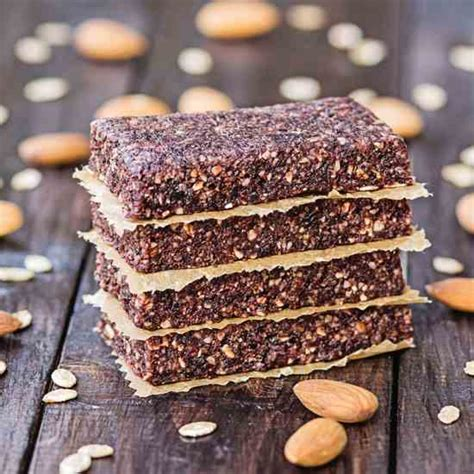

Pemmican Recipe

Vegan Pemmican
This recipe is a simple yet tasty staple in the Kindig household!
Ingredients:
- 1 lb dried beef - pulverized
- 1 lb tallow
Steps:
- melt tallow
- mix tallow and beef
- allow to return to solid state
- cut into squares
- 3/4 lb pemmican